Система Notion
[…] · [дисциплина] · [роль] · [команда]
Демо-пример: одна цель от сигнала до нормы. Каждый шаг — своя база Notion, связи между ними живые. Названия заменены номерами: показана механика, а не содержание.
01 / Почему горят сроки и кто перегружен?
Концепт уходит в задачи: исполнитель, срок, красный флаг по просрочке, план и факт часов. Отсюда же берётся норма для следующего сигнала.
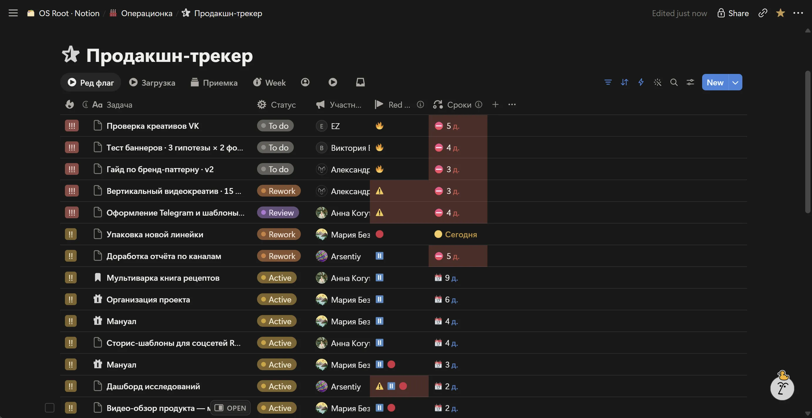
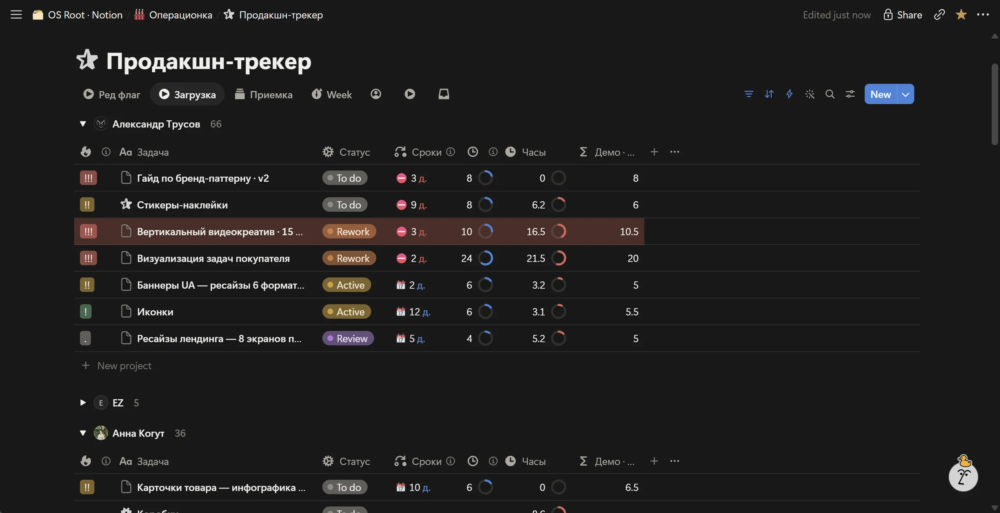
02 / Сколько на самом деле стоит единица контента?
Норма по каждому типу работы посчитана по истории. Часы или круги правок выше нормы — сигнал. Так же подсвечиваются формат, потерявший отклик, и точка контакта с провалом по метрике.
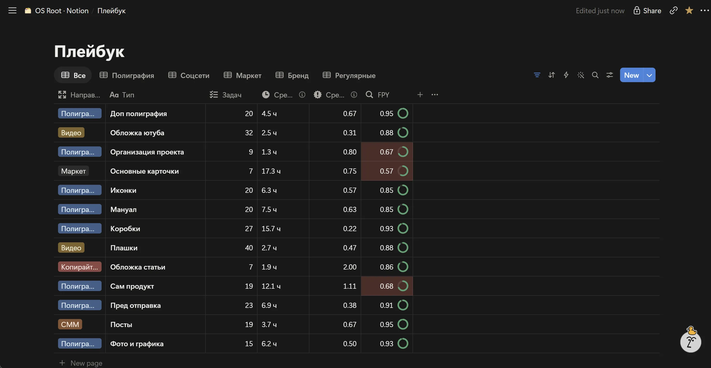
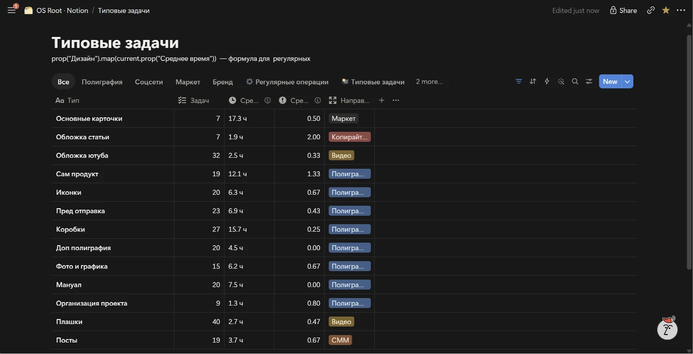
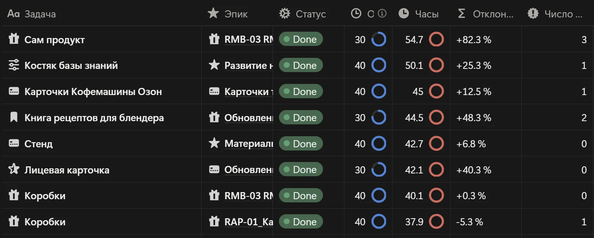
03 / Что выходит на неделе и где опубликовано?
Материал выходит наружу и попадает в базу релизов: канал, дата, версия. Каждый релиз связан со своим материалом и целью, к нему и подтягиваются метрики.
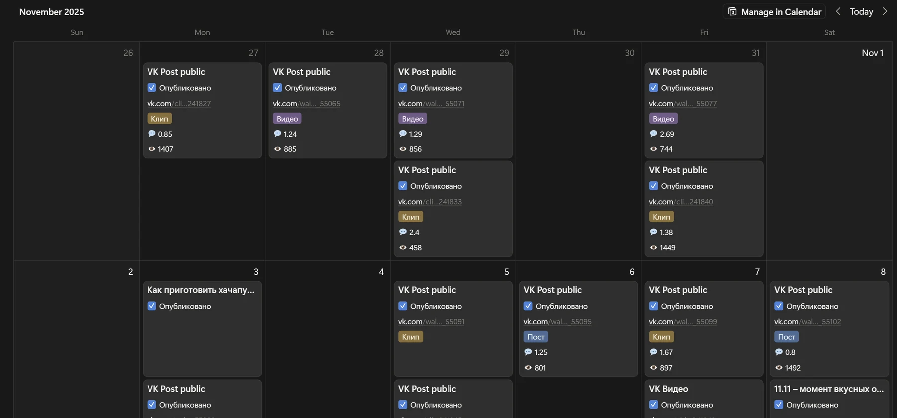
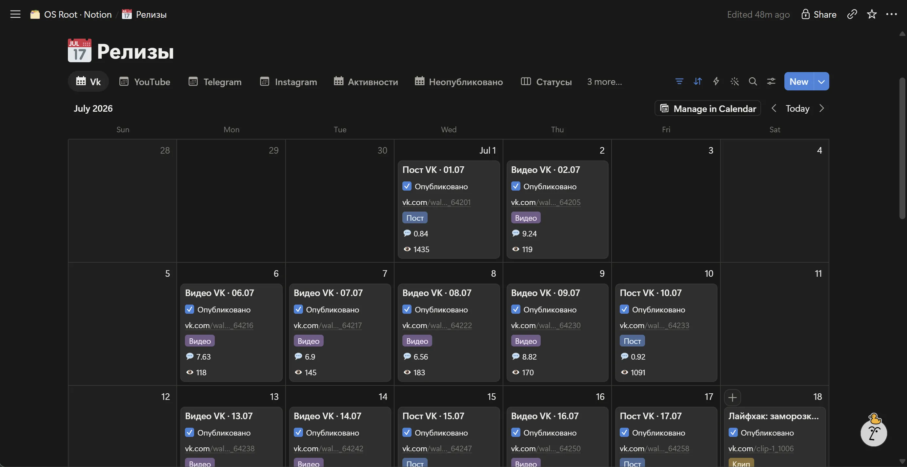
04 / Что сработало и что масштабировать?
Статистика приходит в базу фактов с источником и периодом и поднимается в ключевые результаты. Подтвердившееся закрепляется нормой в типовой задаче.
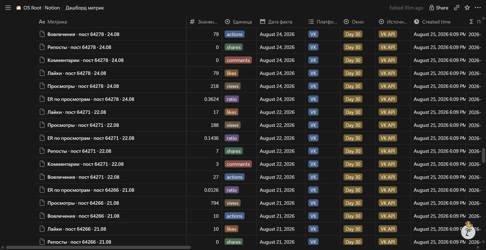
05 / На чём основаны идеи?
Под сигнал поднимаются основания: задачи категории, шаги задачи и ожидаемые результаты, группы аудитории и чем занята категория у конкурентов. Из них видно, где именно просело.
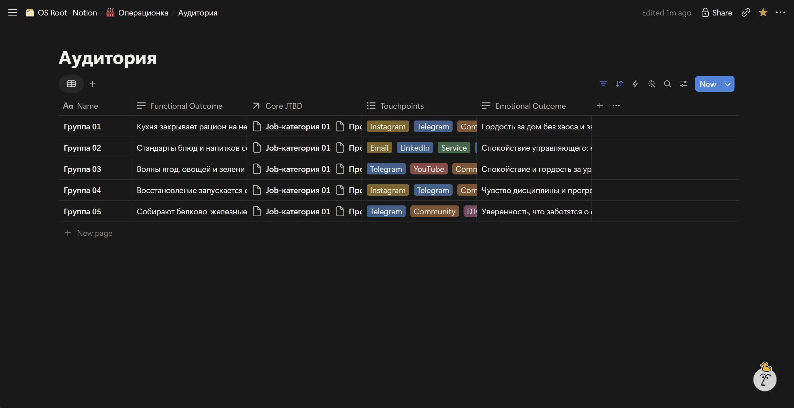
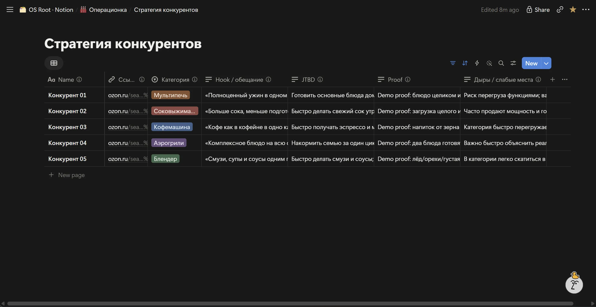
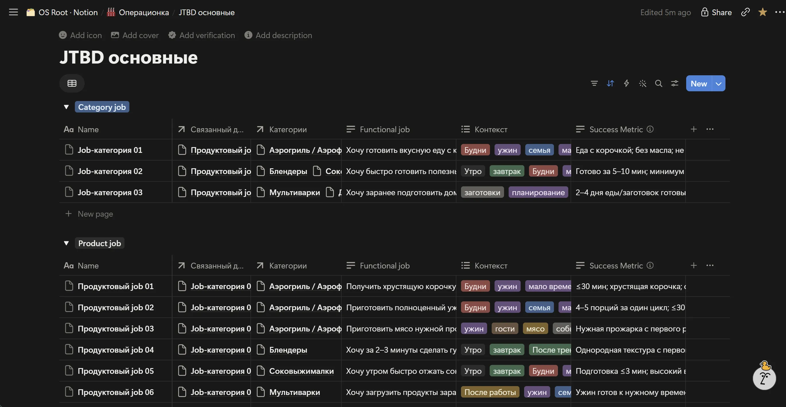
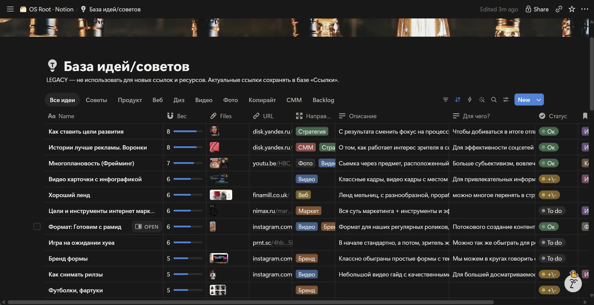
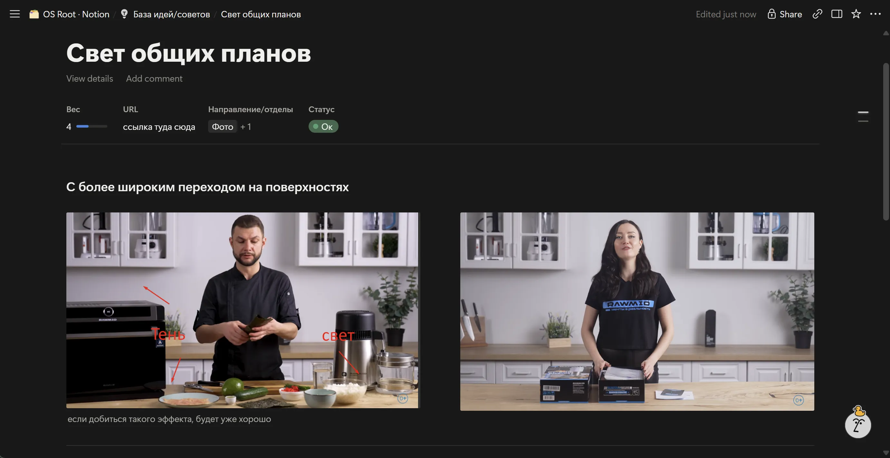
06 / До и после
[текст позже]